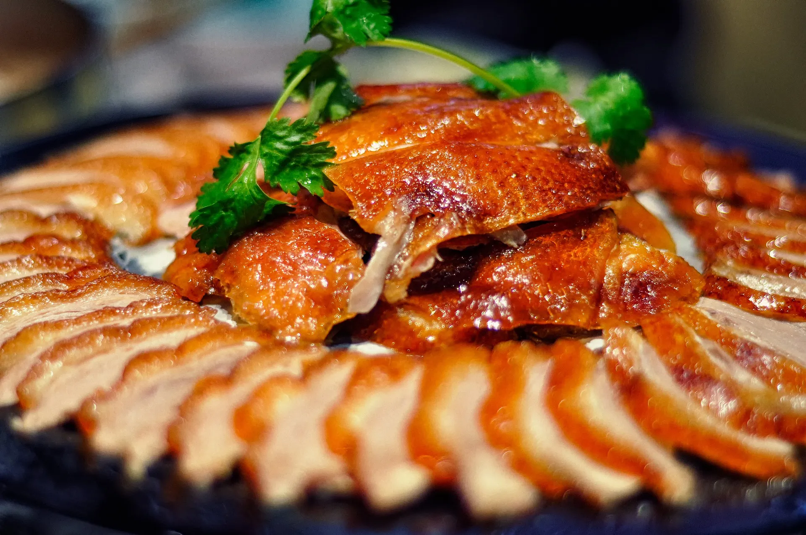
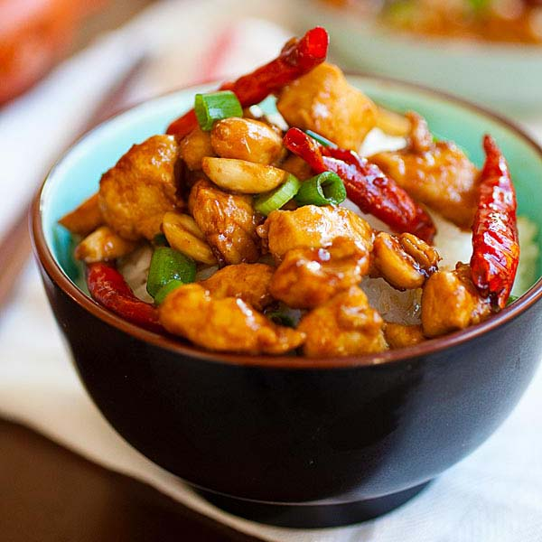
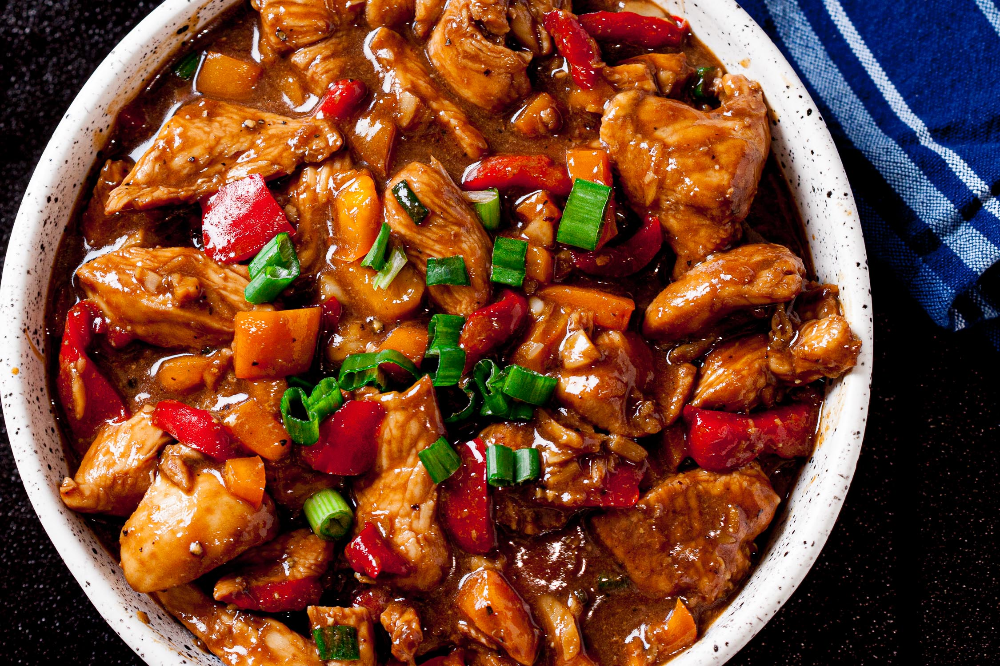

China Major Ethnic Groups
The History Of Ethnicity In China
The Han community for years portrayed prosperity and grew both in numbers and
geographical boundaries. Within two millenniums, the ethnic group had absorbed many minority groups in
China to become the dominant ethnic group. This sinicization reduced the many different states of China
facilitating unity in imperial China. The Han inability to endorse and respect the different cultures and
religion of other ethnic groups promoted the need for independence among the minorities conceptualizing a
cultural divide. However, the imperial rule of the Han in their locality lands flourished until the communists took power in 1949.
Different ethnic group had a right to operate freely and independently of the federal government and can also disaffiliate.
After years of influence, China finally gave into communalism. This change in governance saw the end of the sinofication of the non-Han
Chinese people. The government of China also accepted, the Muslims in the region as Chinese and endorsed Islam as a religion
constituting of many separate ethnic groups.
The Han Chinese, 91.6%
This ethnic group is the largest community not only in China but also in the whole world.
With a population of about 1220.84 million, they live primarily in Yellow River, Pearl River, Yangtze River and Songliao Plain.
The Han people majorly speak Mandarin and practice Taoism, Buddhism, and Confucianism.
Zhuang, 1.27%
The Zhuang community group is the second largest community in the country with a population of 16,926,381.
The majority occupy the Guangxi Zhuang Autonomous Region and the province of Yunnan. They have their own language, but a majority speaks Chinese dialects.
Their culture and way of life are similar to the Han, and this has facilitated respect and unity among them.
Hui Minority, 0.79%
This ethnic group practices the Islamic religion as they are descendants of the Turks but do not speak the dialect.
Instead, they speak Mandarin Chinese just like the Uighurs.Today, they live in the Ningxia Hui Autonomous Region in the northwest of China,
and the community is concentrated in Gansu, Hebei, Henan, Shandong, and Xinjiang provinces. The ethnic group shares customs and language with the Han people.
They are approximately 10,586,087 people.
Manchu, 0.78%
The ethnic group has a population of about 10,387,958 concentrated in the provinces of Liaoning, Heilongjiang, and Jilin.
The people practice Buddhism and believe in Shamanism.
China Foods
1. Peking Roasted Duck
Beijing Roasted Duck
Peking duck (北京烤鸭 Běijīng kǎoyā) is a famous dish from Beijing, enjoying world fame, and considered as one of China national dishes.
Peking duck is savored for its thin and crispy skin. Sliced Peking duck is often eaten with pancakes, sweet bean sauce, or soy sauce with mashed garlic.
It is a must-taste dish in Beijing!
As “the first dish to taste in China”, Beijing Roast Duck used to be a royal dish in medieval China. It has been a “national dish of diplomacy” since the 1970s,
when it was first used for the reception of foreign guests by Premier Zhou Enlai (the first Premier of the People's Republic of China).
It is highly praised by heads of state, government officials, and domestic and foreign tourists.





2. Kung Pao Chicken
Kung Pao Chicken (宫保鸡丁 gōngbào jīdīng) is a famous Sichuan-style specialty, popular with both Chinese and foreigners.
The major ingredients are diced chicken, dried chili, cucumber, and fried peanuts (or cashews).
People (Chinese takeaways) in Western countries have created a Western-style kung pao chicken,
for which the diced chicken is covered with cornstarch, and vegetables, sweet and sour sauce, and mashed garlic are added.






3. Sweet and Sour Pork
Sweet and Sour Pork
Sweet and sour pork (糖醋里脊 tángcù lǐjǐ) has a bright orange-red color, and a delicious sweet and sour taste.
At the very beginning there was only sweet and sour pork, but to meet demands, there have been some developments on this dish.
Now, the pork can be substituted with other ingredients like chicken, beef, or pork ribs.


4. Hot Pot
Hot pot, or hotpot (火锅 huǒguō), is one of the most popular dishes in China, especially in Sichuan Province or Chongqing.
People cook in and eat from a simmering pot of soup stock (broth) on a gas/induction hob in the middle of the dining table with foodstuffs
and condiments around the pot. People can add and cook whatever they like in the broth. The secret of whether a hot pot is good or not lies in
the broth, which all the meat slices and vegetables take their flavor from.
Chinese people are very fond of hot pot. In the past hot pot used to be favored only in winter, but nowadays hot pot has been appearing on tables all year round.
It is a great way to socialize with friends and relatives. People gather around the pot to eat while chatting, eating, drinking, and having fun.


5. Dumplings
Dumplings (饺子 jiǎozi) are a traditional food type that is widely popular, especially in North China. Chinese dumplings consist of minced meat
and/or chopped vegetables wrapped in a thin dough skin. Popular fillings are minced pork, diced shrimp, ground chicken, beef, and vegetables.
Dumplings can be cooked by boiling, steaming, or frying.
Dumplings are also a traditional dish eaten on Chinese New Year’s Eve. As they look like Chinese silver ingots (Chinese money in old times),
it is believed that the more dumplings you eat during the New Year celebrations, the more money you will make in the New Year. Making dumplings is a
good way to interact with your friends and relatives.
Chinese Dressings
1. Hanfu — The Most Traditional Chinese Clothing
The Hanfu ('Han clothing' — the majority of Chinese are of Han ethnicity) is the oldest of China's traditional clothes. Legend traces it back to over
4,000 years ago when Huangdi's consort, Leizu, made cloth with silk. It was constantly improved throughout several dynasties.
Until the Han Dynasty, the Hanfu was adopted and vigorously promoted by the ruling class. It then became the national clothing of the Han ethnic people.
It also had a far-reaching influence on neighboring Asian countries, such as Korea, Japan, and Vietnam.
Nowadays, people seldom wear Hanfu except on special occasions, such as festivals and wedding ceremonies,
or by young girls who want to show off or taking photos.


2. Qipao (Cheongsam) — the Most Famous Traditional Chinese Dress
The cheongsam (qipao) evolved from the Manchu women's changpao ('long gown') of the Qing Dynasty (1644–1912).
The Manchu ethnic people were also called the Qi people by the Han people; hence their long gown was named qipao ('Qi gown').
Originating in the Qing Dynasty, the cheongsam has mainly developed into Beijing styles, Shanghai styles and Hong Kong styles.
 1.webp)
 2.jpg)
.jpg)
3. Tang Suit
The Tang suit often refers to a type of Chinese jacket rather than the clothing of the Tang Dynasty (618–907).
The origin of Tang suit actually only dates back to the Qing Dynasty era (1644–1911). It was developed from a type
of the era's Manchurian clothing — the magua (马褂, 'horse gown').
This name came from the overseas Chinese. As the Tang Empire was famous for being prosperous and powerful in the world,
foreigners called the overseas Chinese people "the Tang people" and the clothes they wore were called "Tang suits"
(which has been translated as Tangzhuang 唐装).
The Tang suit is a duijin (对襟, a kind of Chinese-style jacket with buttons down the front) with a Mandarin collar
(a band collar) and "frog" buttons (knobs formed of intricately knotted cord).


4. The Zhongshan Suit — Traditional Formal Attire for Men
The Zhongshan suit, also known as the Mao suit overseas, is a type of men's jacket.
It was first advocated by Dr Sun Yat-sen (Sun Zhongshan in Mandarin, hence Zhongshan suit).
The design of Zhongshan suits combines traditional Chinese and Western clothing styles.
Zhongshan suits have four big pockets on the front, two up two down, equally spaced left and right.
There are five central buttons on the front and three smaller buttons on each sleeve.
Zhongshan suits can be worn on formal and casual occasions because of their symmetrical shape, generous appearance, elegance,
and stable impression.


Chinese Greetings
1. 你好 | Nĭhǎo | Hello!
2. 您好 | Nínhǎo | Hello (polite)
3. 大家好 | Dàjiā hǎo | Hello everybody!
4. 老师好 | Lǎoshī hǎo | Hello, teacher!
5. 下午好 | Xiàwǔhǎo | Good afternoon!
6. 晚上好 | Wǎnshànghǎo | Good evening!
7. 早 | Zǎo | Good morning (informal)
8. 喂 | Wéi | Hello (used when answering the phone)
9. 你吃了吗 | Nĭ chī le ma? | Have you eaten?
10. 嗨 | Hāi | Hi!
11. 嘿 | Hēi | Hey!
12. 哈喽 | Hālóu | Hello!